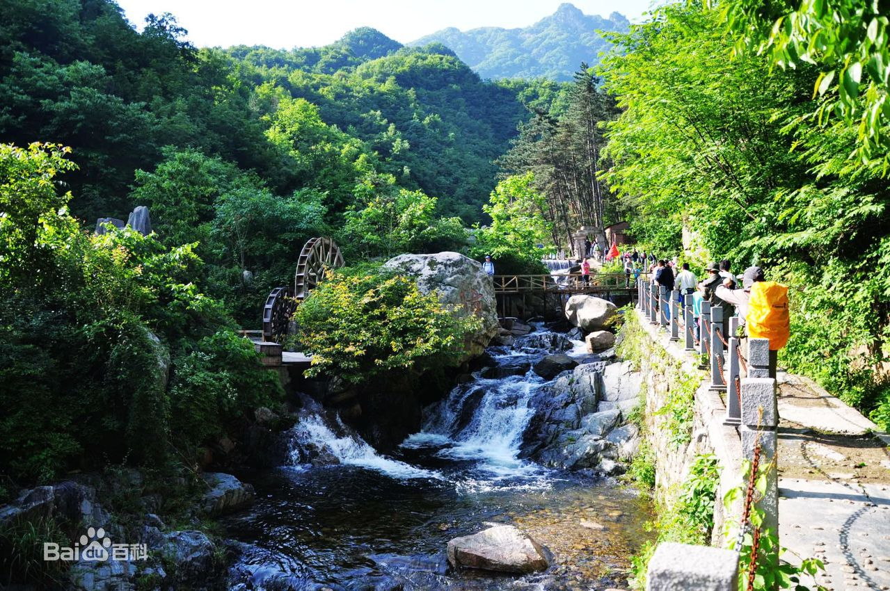
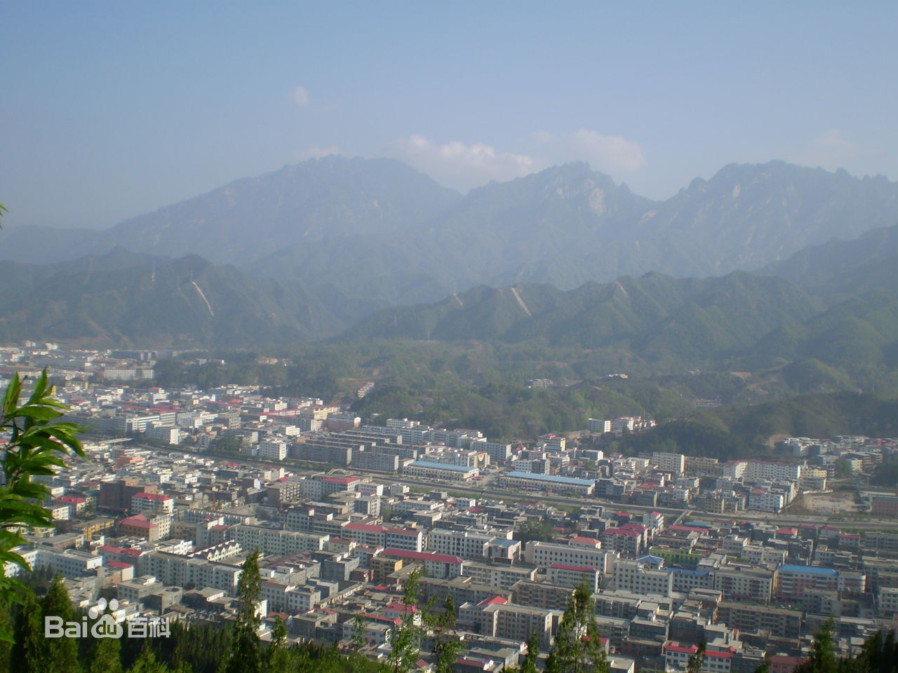
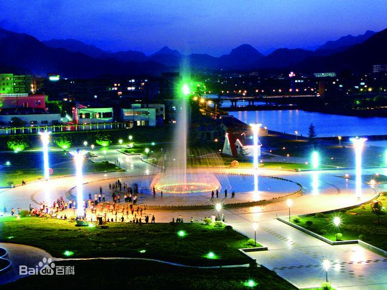
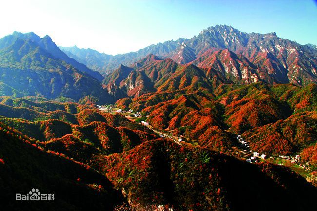
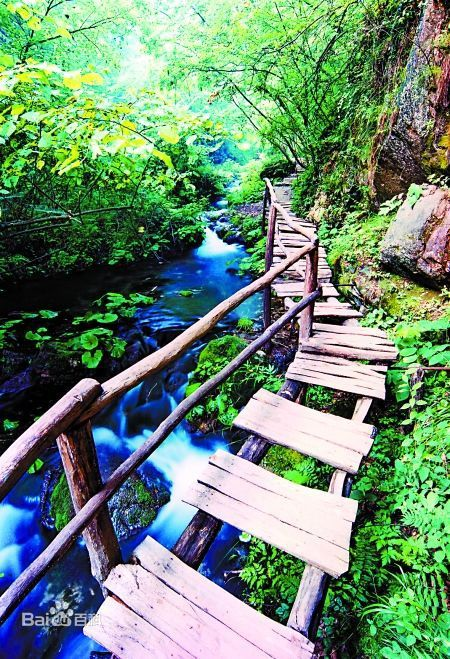
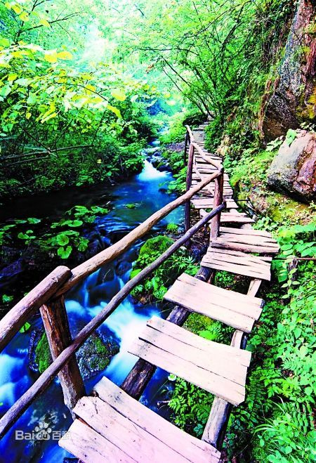
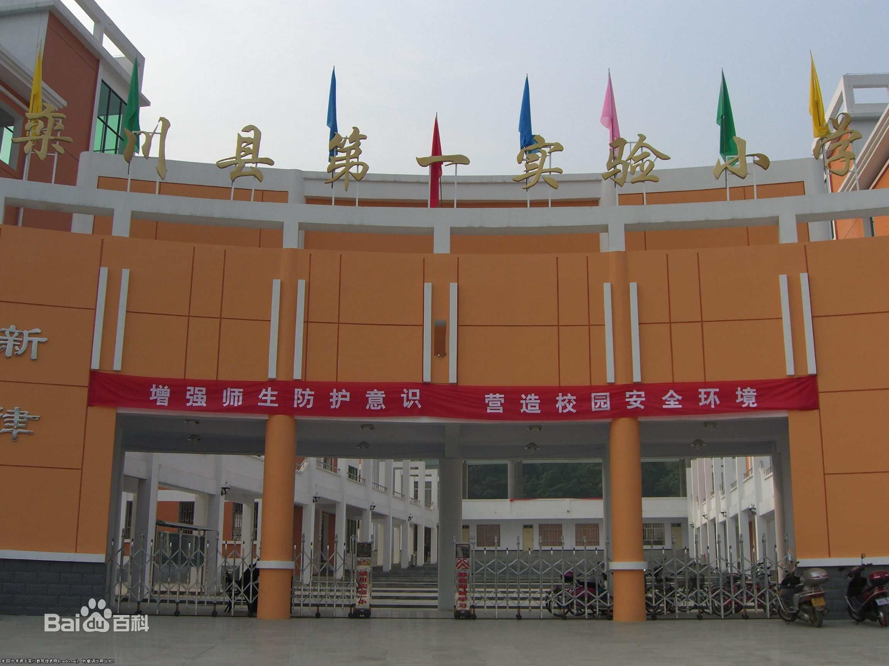
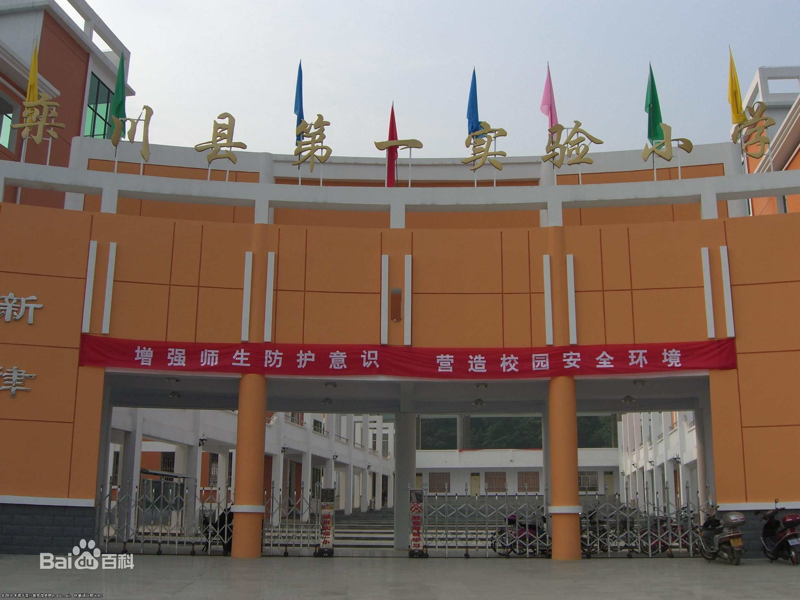
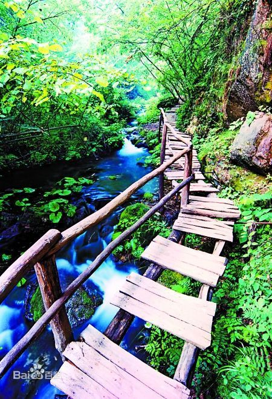
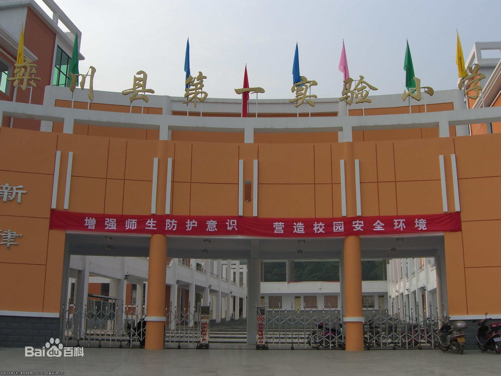

栾川县
栾川因传说远古时期鸾鸟群栖于此而得名。位于河南省西部，东与嵩县毗邻，西与卢氏接壤，南与西峡抵足，北与洛宁摩肩，素有“洛阳后花园”和“洛阳南大门”的美誉。栾川县总面积2477平方千米，素有“四河三山两道川、九山半水半分田”之称。现辖12镇2乡1个管委会（重渡沟管委会）、213个行政村（居委会），总人口35万，其中农业人口29.9万。
2016年县城建成区面积是15.78平方公里。栾川县先后获得国家卫生县城、中国旅游强县、国家生态县、国家园林县城、全国休闲农业与乡村游示范县、全国魅力新农村十佳县、全国社会治安综合治理先进县、全国平安建设先进县、全国义务教育发展基本均衡县、世界十大乡村度假胜地。
2018年12月12日，被命名为第二批“绿水青山就是金山银山”实践创新基地。2019年5月9日，经省级专项评估检查，达到脱贫摘帽标准，正式退出贫困县序列。
本地风光




 

 


